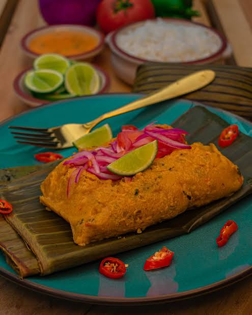
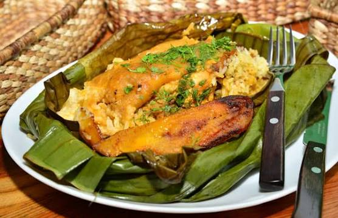
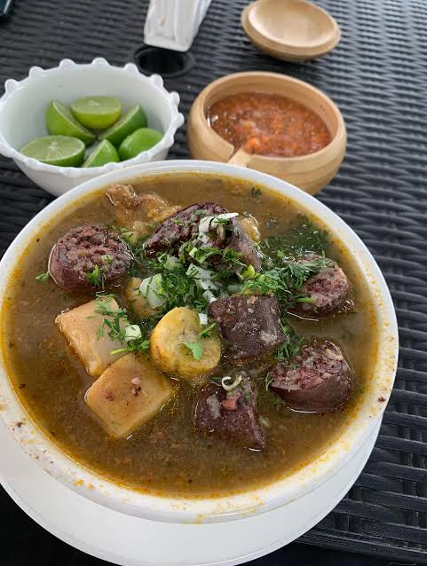
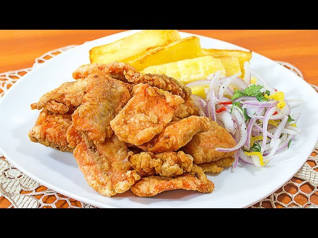
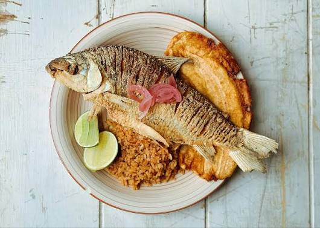

1. Breve descripción del cantón Buena Fe
Buena Fe es uno de los cantones de la provincia de Los Ríos, ubicado en la región Costa del Ecuador. Su cabecera cantonal es la ciudad de San Jacinto de Buena Fe.
Este cantón se caracteriza por sus tierras fértiles, su riqueza natural y sus actividades agrícolas. Es una zona importante para la producción de cacao, banano, palma africana, maíz y otros productos.
Sus habitantes conservan costumbres y tradiciones propias de la cultura montubia. Además, el comercio y la agricultura son actividades fundamentales para el desarrollo económico del cantón.
2. Parroquias del cantón Buena Fe
El cantón Buena Fe está conformado por una parroquia urbana y una parroquia rural.
Parroquia urbana
- San Jacinto de Buena Fe.
Parroquia rural
- Patricia Pilar.
Estas parroquias forman parte de la organización territorial del cantón y contribuyen a sus actividades económicas, sociales y culturales.
3. Platos de comida típicos
En el cantón Buena Fe (provincia de Los Ríos, Ecuador), la gastronomía destaca por su mezcla de tradiciones costeñas y la fuerte influencia de la sazón manaba.
Bollos de pescado

Elaborados con pescado de río (especialmente bocachico), envueltos en masa de plátano verde y cocidos al vapor o a la brasa.
Encebollado

Es una sopa preparada con pescado, yuca y cebolla colorada. Se sirve generalmente con limón y otros acompañamientos.
Tonga manaba

Un plato envuelto en hoja de plátano que contiene seco de gallina o carne, acompañado de maduro frito y arroz; también hay variantes con mariscos y camarón.
Caldo de salchicha

Muy tradicional en al canton preparada con visceras y verde.
CHicharron de gallina y chicharron de pescado

Preparados con un toque crujiente de harina y especies.
Platos con bocachico

Como el sancocho de bocachico o el encanutado de pescado preparado en caña guadúa.
4. Lugares turísticos de Buena Fe
Río Baba
Es un recurso natural importante de la zona. Sus alrededores permiten apreciar paisajes naturales y disfrutar de actividades recreativas donde las condiciones de acceso lo permiten.
Parroquia Patricia Pilar
Es un lugar importante por sus actividades agrícolas, sus comunidades y sus paisajes rurales. Permite conocer las costumbres de los habitantes y la producción del campo.
Balnearios naturales
En los alrededores del cantón existen espacios naturales relacionados con ríos y fuentes de agua. Estos lugares pueden ser visitados para disfrutar de la naturaleza y realizar actividades recreativas, respetando siempre las condiciones de seguridad.
Centro de Buena Fe
El centro de la ciudad permite conocer sus espacios comerciales, parques, establecimientos y la vida cotidiana de sus habitantes.
Los atractivos naturales y rurales son importantes porque permiten impulsar el turismo local y dar a conocer la riqueza ambiental y cultural del cantón.
Para conocer más información puedes visitar:
Consultar lugares turísticos de Buena Fe5. Hoteles donde alojarse en Buena Fe
En Buena Fe y sus alrededores existen opciones de alojamiento para visitantes que llegan por motivos turísticos, comerciales o laborales.
Para encontrar establecimientos disponibles, puedes consultar el siguiente enlace:
Ver hoteles en Buena FeSe recomienda verificar los precios, servicios, ubicación y disponibilidad antes de realizar una reservación.
6. Alcalde del cantón Buena Fe
Diana Anchundia Yépez
El alcalde es la máxima autoridad del Gobierno Autónomo Descentralizado Municipal y tiene la responsabilidad de dirigir la administración del cantón.
7. Población del cantón Buena Fe
Para conocer la población del cantón Buena Fe se debe consultar el Censo de Población y Vivienda de 2022 del Instituto Nacional de Estadística y Censos (INEC).
La población está distribuida entre la cabecera cantonal, la parroquia Patricia Pilar y las diferentes comunidades rurales.
8. Mapa del cantón Buena Fe
En el siguiente mapa puedes observar la ubicación geográfica del cantón Buena Fe, perteneciente a la provincia de Los Ríos.